Radius: 0.330966 m. Mittlere Umdrehungsdauer: 169.599 s (76 vollständige Umdrehungen). UTC: 3:41:09 bis 8:15:08. Datum: 2026-11-03 (Konfiguration, mit vorhandenen RMC-Daten abgeglichen).
P23A_0; P23A_1; UM980
Nur RTK-fixed-Positionen (GGA-Qualität 4) werden verwendet. Das schwarze Kreuz markiert den Ursprung. Die Winkelgrafik zeigt den Drehwinkel geteilt durch 360°. Referenz: P23A_0. Ihr tangentialer Eigenfehler ist nicht unabhängig messbar; ihre Spur beschreibt hauptsächlich den radialen Restfehler. Keine Extrapolation oder Interpolation über große Referenzlücken und keine nachträgliche Zeitverschiebung. Ganze Umdrehungen über Referenzlücken bleiben unbekannt (reference_angle.csv).
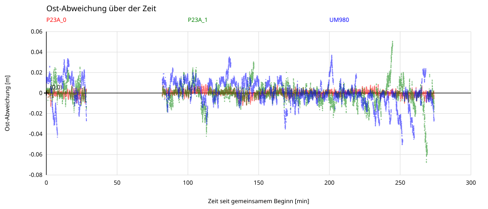


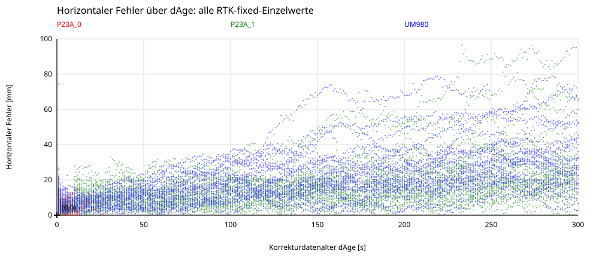
dAge ist das gemeldete GGA-Korrekturdatenalter [s]. HRMS = sqrt(Mittelwert(Ostfehler² + Nordfehler²)) je 10-s-Intervall (0,10], (10,20], …; dAge=0 zählt zum ersten Intervall. Punkte liegen beim mittleren dAge je Intervall. Die Geraden werden ungewichtet an die Intervall-HRMS-Werte angepasst, mit freiem Achsenabschnitt und nur im belegten Altersbereich; ihre Steigungen stehen in mm/s. Alle verwendbaren RTK-fixed-Epochen mit gültigem dAge sind enthalten, ohne Paarung der Receiver. dAge ist keine extern gemessene Outage-Dauer.

Vergleich mit Abbildung 1, Seite 2 von „Frühere Outage Results.pdf“: Alte Kurven sind aus PDF-Vektorlinien rekonstruierte Näherungen, keine Rohmesswerte. Der einzelne Punkt bei 300 s und etwa 20 mm verwendet finale präzise Uhren und Bahnen. Neu: HRMS je 10-s-Intervall und lineare Fits nur im gemessenen Altersbereich. Unterschiedliche Versuchsbedingungen und Referenzen begrenzen die Vergleichbarkeit. Die Detailansicht zeigt die zwei niedrigeren alten Kurven und den präzisen Uhrenpunkt; alle alten Kurven stehen in der Gesamtansicht.
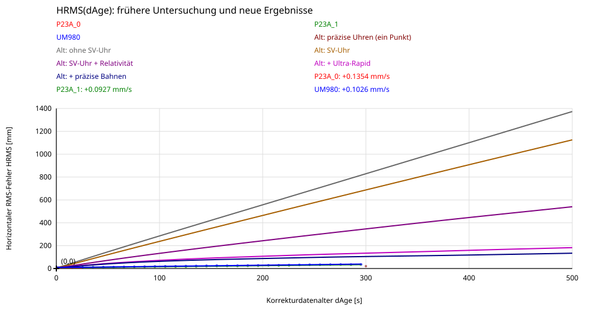
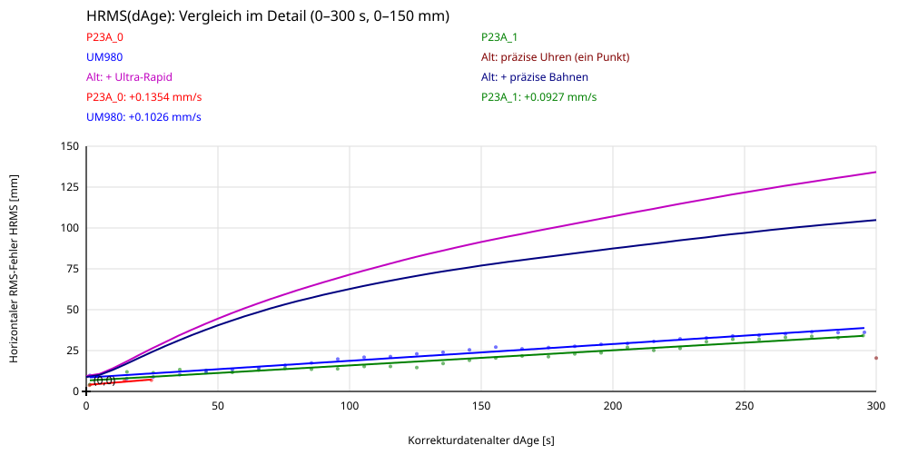
Kleinster RMS: P23A_1; kleinster Median: P23A_1; kleinstes 95%-Quantil: P23A_1; kleinster Maximalfehler: UM980. Bewertet werden nur die gepaarten Fixed-Lösungen.
Verglichen werden ausschließlich identische UTC-Epochen, an denen alle Outage-Empfänger RTK-fixed sind und alle ein Korrekturdatenalter über 10 s melden. Dies kennzeichnet veraltete Korrekturdaten, nicht extern protokollierte Schaltzeiten. Nicht-fixed-Positionen und Referenzlücken sind ausgeschlossen; das Fazit bewertet daher die Genauigkeit der verbleibenden Fixed-Lösungen, nicht die vollständige Verfügbarkeit während aller Outages.
| Receiver | Epochen | RMS [cm] | Median [cm] | 95%-Quantil [cm] | Maximum [cm] |
|---|---|---|---|---|---|
| P23A_1 | 6812 | 1.89 | 1.31 | 3.59 | 9.65 |
| UM980 | 6812 | 2.68 | 1.90 | 5.42 | 7.94 |
Ausführen (Python 3.10 oder neuer, keine Zusatzpakete):
python3 analysis/turn_table.py --dataset datasets/2026-11-03Anschließend results/2026-11-03/index.html im Browser öffnen. Alle Diagramme liegen auch einzeln als SVG vor. CSV-Dateien enthalten die Messpositionen, interpolierten Sollpositionen, Fixqualität, Korrekturdatenalter und Ost-/Nord-Abweichungen in Metern. summary.json enthält Fitparameter und Statistik.
Andere Verzeichnisse bzw. maximale Referenzlücke:
python3 analysis/turn_table.py --dataset datasets/2026-11-03 --max-gap 3NMEA-Prüfsummen werden geprüft, ungültige Positionen (Qualität 0) verworfen. Auch wörtlich gespeicherte \r\n werden unterstützt. Zeitbasis sind die UTC-Epochen der GGA-Sätze, nicht Dateibeginn oder Zeilennummer. Tageswechsel werden erkannt. Das Datum 03.11.2026 kommt aus UM980-RMC; mangels Datumsinformation in den beiden P23A-Dateien wird für sie derselbe Tag angenommen. Eine unbekannte interne Messlatenz lässt sich allein aus GGA nicht unabhängig prüfen; es wird keine nachträgliche Zeitverschiebung geschätzt.
WGS84-Breite/Länge werden mit den lokalen WGS84-Krümmungsradien in Ost-/Nord-Meter umgerechnet (für diesen kleinen Messbereich ausreichend). Ein geometrischer Kreisfit mit Huber-Gewichten bestimmt Mittelpunkt und Radius aus den RTK-fixed-Positionen (GGA-Qualität 4) von P23A_0. Der Kreisfit verwendet die ganze verfügbare Fixed-Referenz.
Der Referenzwinkel ist atan2(Nord−Mittelpunkt_Nord, Ost−Mittelpunkt_Ost), positiv von Ost nach Nord. Die Winkelgrafik zeigt den relativen Drehwinkel geteilt durch 360° als Anzahl der Vollkreise seit dem ersten Referenzpunkt (einschließlich Bruchteilen). Die CSV-Dateien enthalten zusätzlich diese Umdrehungszahl. Seine zeitliche Entwicklung wird entfaltet; es wird keine konstante Drehgeschwindigkeit vorausgesetzt. Radiale Referenzausreißer oberhalb von max(2 cm, 6 robusten Standardabweichungen) werden für die Winkelbestimmung ausgeschlossen. Bei diesen Daten wurden keine Fixed-Punkte dadurch ausgeschlossen.
Ausgewertet wird der gemeinsame Zeitraum mit verfügbarer Fixed-Referenz. Der entfaltete Winkel wird bei Bedarf zwischen benachbarten zuverlässigen Referenzepochen interpoliert, höchstens über --max-gap Sekunden. Keine Extrapolation. Vor dem RTK-fixed-Filter stimmen die 13.191 zeitlich zuordenbaren Epochen aller drei Receiver exakt überein; eine Interpolation ist daher hier nicht nötig. Nach dem Filter enthält jeder Receiver nur seine eigenen RTK-fixed-Epochen; die Zeitzuordnung zur Referenz bleibt unverändert. Zwei größere Referenzlücken werden ausgespart. Über solche Lücken ist die Zahl ganzer Umdrehungen unbekannt; der Winkel wird anschließend mit dem nächstliegenden Winkel fortgesetzt. Die Segmentnummer steht in reference_angle.csv.
Für jede verwendete Messung gilt:
Soll_Ost = Mittelpunkt_Ost + R*cos(Winkel(t))
Soll_Nord = Mittelpunkt_Nord + R*sin(Winkel(t))
Fehler = Messposition(t) − Sollposition(t)Nur RTK-fixed-Positionen (GGA-Qualität 4) werden in Ergebnis-CSV, Diagrammen und Fehlerstatistiken berücksichtigt. GGA-Qualität 4 allein beweist keinen aktiven Empfang von Referenzdaten. Die Outage-Schaltzeiten werden daher nicht aus der Fixqualität oder dem ungefähren 3-/5-Minuten-Zyklus erfunden. Das gemeldete Korrekturdatenalter ist in den CSV-Dateien enthalten.
Da der Sollwinkel aus P23A_0 selbst stammt, kann dessen tangentialer Fehler nicht unabhängig bestimmt werden. Die rote Spur zeigt hauptsächlich den radialen Restfehler. Gemeinsame systematische Fehler aller Receiver können mit dieser Referenzannahme ebenfalls nicht aufgedeckt werden.
Mittlere Umdrehungsdauer: 169,599 s (≈ 2 min 49,6 s), arithmetisches Mittel aus 76 vollständigen Umdrehungen. Standardabweichung: 15,028 s, Minimum: 160,797 s, Maximum: 292,545 s.
Je zusammenhängendem Referenzsegment werden ausgehend vom ersten verwendeten Winkel die Zeitpunkte aufeinanderfolgender 360°-Fortschritte bestimmt; die Durchgangszeiten werden zwischen benachbarten Epochen linear interpoliert. Die Dauer jeder vollständigen Umdrehung geht gleich gewichtet in den Mittelwert ein. Unvollständige Umdrehungen am Segmentende und Referenzlücken werden ausgeschlossen. Langsamere Abschnitte oder Stillstände innerhalb einer vollständigen Umdrehung bleiben enthalten. Einzelwerte und Segmentnummern stehen in results/2026-11-03/data/rotation_periods.csv, Kennwerte zusätzlich in summary.json.
Radius: 0,330966 m. Gemeinsamer auswertbarer Zeitraum: 03:41:09–08:15:08 UTC, mit ausgesparten Referenzlücken.
| Receiver | RMS horizontal | 95%-Quantil | Maximum |
|---|---|---|---|
| P23A_0 | 0,00383 m | 0,00769 m | 0,01710 m |
| P23A_1 | 0,01746 m | 0,03542 m | 0,09647 m |
| UM980 | 0,02071 m | 0,04256 m | 0,07939 m |
Die vollständige horizontale Ansicht enthält sämtliche RTK-fixed-Abweichungen; die zusätzliche Detailansicht zeigt ±10 cm und blendet Punkte außerhalb aus. Gleiche Achsenskalierung, rot=P23A_0, grün=P23A_1, blau=UM980, schwarzes Kreuz=Sollposition. Zusätzlich: Anzahl der Vollkreise, Ost-, Nord- und horizontaler Fehler über der Zeit. Vor dem HRMS-/Fit-Diagramm zeigt horizontal_dage_scatter.svg alle verwendbaren RTK-fixed-Einzelwerte des horizontalen Fehlers [mm] über dAge [s], ohne Binning. Before the HRMS/fit plot, horizontal_dage_scatter.svg shows every usable RTK-fixed horizontal error sample [mm] versus dAge [s], without binning. horizontal_dage.svg: dAge ist das gemeldete GGA-Korrekturdatenalter [s]. HRMS = sqrt(Mittelwert(Ostfehler² + Nordfehler²)) je 10-s-Intervall (0,10], (10,20], …; dAge=0 zählt zum ersten Intervall. Punkte liegen beim mittleren dAge je Intervall. Die Geraden werden ungewichtet an die Intervall-HRMS-Werte angepasst, mit freiem Achsenabschnitt und nur im belegten Altersbereich; ihre Steigungen stehen in mm/s. Alle verwendbaren RTK-fixed-Epochen mit gültigem dAge sind enthalten, ohne Paarung der Receiver. dAge ist keine extern gemessene Outage-Dauer. Alle Diagramme markieren den Ursprung und die Nulllinien; das Raster verwendet runde Schrittweiten. Intervallwerte stehen in horizontal_dage_hrms.csv, Fitparameter in summary.json. Statistiken beziehen sich auf alle verwendeten Epochen, nicht nur auf das Detailfenster oder einzelne Outage-Phasen.
Validiert durch vollständigen Lauf mit den drei Eingabedateien, identische Ergebnis-Zeitstempel, einen synthetischen Kreis mit bekanntem Mittelpunkt/Radius und einen GGA-Mitternachtswechsel.
Zusätzlicher historischer Vergleich: historical_comparison.svg übernimmt alle fünf Kurven aus Abbildung 1 auf Seite 2 von references/historical-outage-results/original.pdf und ergänzt die neuen HRMS-Werte und Fitgeraden. historical_comparison_detail.svg zeigt 0–300 s und 0–150 mm mit den zwei niedrigeren alten Kurven und dem isolierten präzisen Uhrenpunkt. Vergleich mit Abbildung 1, Seite 2 von „references/historical-outage-results/original.pdf“: Alte Kurven sind aus PDF-Vektorlinien rekonstruierte Näherungen, keine Rohmesswerte. Der einzelne Punkt bei 300 s und etwa 20 mm verwendet finale präzise Uhren und Bahnen. Neu: HRMS je 10-s-Intervall und lineare Fits nur im gemessenen Altersbereich. Unterschiedliche Versuchsbedingungen und Referenzen begrenzen die Vergleichbarkeit. Die Detailansicht zeigt die zwei niedrigeren alten Kurven und den präzisen Uhrenpunkt; alle alten Kurven stehen in der Gesamtansicht. Die rekonstruierten Koordinaten und ihre Herkunft stehen unter references/historical-outage-results/.
P23A_1 zeigt die kleineren typischen horizontalen Abweichungen während Abschnitten mit veralteten Referenzdaten. Der UM980 hat dagegen den kleineren maximalen Einzelfehler. P23A_0 dient als kontinuierlich versorgte Referenz und wird nicht als Outage-Kandidat gewertet.
Für einen fairen direkten Vergleich werden 6.812 identische UTC-Epochen ausgewählt: beide Receiver RTK-fixed, beide mit gemeldetem Korrekturdatenalter >10 s. Das ist ein nachvollziehbarer Indikator für veraltete Korrekturen, kein externes Protokoll der tatsächlichen Schaltzeiten. Nicht-fixed-Positionen und Referenzlücken sind ausgeschlossen. Das Fazit bewertet die Genauigkeit der verbleibenden Fixed-Lösungen, nicht die vollständige Verfügbarkeit über sämtliche Outage-Phasen.
| Receiver | RMS | Median | 95%-Quantil | Maximum |
|---|---|---|---|---|
| P23A_1 | 1,89 cm | 1,30 cm | 3,59 cm | 9,65 cm |
| UM980 | 2,69 cm | 1,90 cm | 5,42 cm | 7,94 cm |
Damit liegt der RMS von P23A_1 in diesem Vergleich rund 30 % unter dem des UM980. Die einzelnen Vergleichsepochen stehen in results/2026-11-03/data/outage_comparison.csv, die Statistik in summary.json.
Die aktuellen Receiver erreichen bei ungefähr fünf Minuten alten Korrekturen etwa 3–4 cm HRMS. Das liegt deutlich unter den früheren Stufen 1–5, erreicht aber nicht den damaligen Wert mit präzisen Satellitenuhren aus Stufe 6. Welche Verfahren die heutigen Receiver intern einsetzen, lässt sich aus den Positionsdaten allein nicht bestimmen.
Quelle: „references/historical-outage-results/original.pdf“, Punkte 1–6 auf Seiten 1–2, Abbildung 1 auf Seite 2. Die folgenden historischen Werte bei 300 s sind Näherungen aus den rekonstruierten Kurven; nur Stufe 6 ist ein einzelner, im Text mit etwa 20 mm angegebener Punkt. Unsere 34,2 mm (P23A_1) und 36,2 mm (UM980) stammen aus 290 < dAge ≤300 s, nicht aus einer Fitvorhersage. P23A_1 reicht bis 299 s.
1. Alte Referenzdaten unverändert verwenden: Früher starker, nahezu linearer Fehleranstieg bis etwa 829 mm HRMS bei 300 s. Unsere 34–36 mm zeigen ein wesentlich günstigeres Verhalten. Das Alter der Korrekturen allein bestimmt die Genauigkeit nicht; die Verarbeitungsmethode und die Testbedingungen sind wesentlich.
2. Broadcast-Satellitenuhren berücksichtigen: Verbesserung auf etwa 687 mm. Die zeitliche Änderung der Satellitenuhren ist wichtig, doch das einfache Uhrenmodell reichte im früheren Versuch nicht aus.
3. Relativistische Korrektur ergänzen: Weitere Verbesserung auf etwa 347 mm. Bei zeitversetzten Referenz- und Roverdaten werden Modellterme relevant, die sich bei gleichzeitigen Beobachtungen weitgehend herausheben. Sorgfältige Modellierung ist entscheidend.
4. Ultra-Rapid-Bahnen und Uhren verwenden: Rückgang auf etwa 134 mm. Bessere Satelliteninformationen reduzierten den Fehler deutlich. Unsere heutigen Werte liegen nochmals darunter; wegen unterschiedlicher Versuchsbedingungen ist daraus kein isolierter Algorithmusvergleich ableitbar.
5. Finale präzise Bahnen verwenden: Nur noch begrenzte Verbesserung auf etwa 105 mm. Im früheren Versuch waren Bahnfehler zuletzt nicht mehr der entscheidende Engpass. Genauere Bahnen allein lösten das Problem nicht.
6. Finale präzise Satellitenuhren verwenden: Etwa 20 mm bei 300 s. Der frühere Bericht führt den verbleibenden Fehler auf kurzfristige Nichtlinearitäten der Satellitenuhren zurück. Für unsere Restfehler ist dies eine plausible Prüfhypothese, keine nachgewiesene Ursache. Der historische Punkt verwendet nachträglich verfügbare präzise Produkte und ist keine belegte Echtzeitgrenze.
Was lernen wir? Die heutigen Ergebnisse sind sehr gut, eine erreichte Genauigkeitsgrenze ist aber nicht belegt. Ein linearer Fehleranstieg identifiziert die Ursache nicht eindeutig. Unsere Steigungen von 0,0927 mm/s (P23A_1) und 0,1026 mm/s (UM980) sind empirische Fits, keine physikalischen Grenzen.
Der Vorteil von P23A_1 wird bei langen Outages kleiner: Mit frischen Korrekturen (0 < dAge ≤10 s) betragen die HRMS-Werte 4,2 gegenüber 9,8 mm; nahe 300 s sind es 34,2 gegenüber 36,2 mm. Diese Altersklassen enthalten jeweils die verwendbaren Fixed-Epochen des einzelnen Receivers und sind kein gepaarter Vergleich.
Nächster Nachweis: Dieselben Outage-Rohdaten mit unterschiedlichen Satellitenuhr- und Bahnmodellen auswerten, eine unabhängige Positionsreferenz verwenden und die Fixed-Verfügbarkeit mitbewerten. Unsere aktuelle Auswertung bewertet erhaltene Fixed-Lösungen relativ zum P23A_0-Sollkreis. Gemeinsame Fehler können verborgen bleiben. Sie belegt gute relative Outage-Genauigkeit, aber keine absolute Genauigkeitsgrenze.
Der Projektinhaber datiert den historischen Vergleich auf den 18.07.2005, mit Trimble-Receivern im GPS-only-Betrieb. Die damaligen 20 mm mit präzisen Uhren sind keine universelle heutige Grenze. Die ausführliche Erklärung zu Broadcast-Restfehlern, aktueller Literatur und dem Vier-Receiver-Vergleich steht im Bericht zum 07.11.2026. [R1]
Quellen wurden am 07.11.2026 geprüft. Wissenschaftliche Arbeiten, Herstellerangaben und eigene Messungen werden getrennt bewertet; keine Quelle repliziert exakt unseren Versuchsaufbau.
[R1] Sören Klose. Frühere Outage Results. Trimble GPS-only; measurement 18 July 2005 (project-owner context). Files: original.docx, original.pdf. Folder: references/historical-outage-results/.
[R2] Bao Shu et al. (2019). Analysis of Factors Affecting Asynchronous RTK Positioning with GNSS Signals. peer-reviewed; Remote Sensing 11(10), 1256. DOI: 10.3390/rs11101256.
[R3] V. Bhandari, K. O’Keefe, G. Lachapelle (2013). Assessment of Multi-constellation RTK Solutions During Differential Correction Data Outages. research conference; ION GNSS+ 2013, pp. 3194–3204.
[R4] Yuan Du et al. (2019). A New Asynchronous RTK Method to Mitigate Base Station Observation Outages. peer-reviewed; Sensors 19(15), 3376. DOI: 10.3390/s19153376; full text: https://pmc.ncbi.nlm.nih.gov/articles/PMC6696619/.
[R5] Quectel (accessed 2026-11-07). LG290P series: RTK HOLD and multi-constellation support. manufacturer documentation, not independent validation.
[R6] Unicore (accessed 2026-11-07). Core Technology: RTKKEEP. manufacturer documentation, not independent validation.
[R7] European Space Agency (accessed 2026-11-07). How the Galileo atomic clocks work. technical background.
[R8] J. Sanz Subirana, J. M. Juan Zornoza, M. Hernández-Pajares (2011). Combination of GNSS Measurements. ESA Navipedia technical reference.
[R9] NovAtel (User Manual v10; accessed 2026-11-07). SMART7 Installation and Operation User Manual, section 3.9, page 47: RTK ASSIST. manufacturer documentation; uses additional TerraStar L-band corrections.
Ergänzend liegt die ChatGPT-Implementierungsnotiz vom 18.10.2026 jetzt als [R10] vor. Die dort diskutierten 0,36 m in 120 s sind keine direkt vergleichbare HRMS-Messreihe; die ausführliche Einordnung steht im Bericht zum 07.11.2026.
[R10] ChatGPT. GNSS Positioning During Reference Data Outages: Observation models, clock propagation and implementation. Technical implementation note, 18 October 2026, 14 pp. Local file: 2026-10-18.gnss-reference-outage.pdf in references/literature/. AI-generated discussion, not an independent FMI benchmark.
Radius: 0.330966 m. Mean rotation period: 169.599 s (76 complete revolutions). UTC: 3:41:09 to 8:15:08. Date: 2026-11-03 (configuration, checked against available RMC dates).
P23A_0; P23A_1; UM980
Only RTK-fixed positions (GGA quality 4) are included. The black cross marks the origin. The rotation plot shows angle divided by 360°. Reference: P23A_0. Its tangential error is not independently observable; its trace mainly represents radial residuals. No extrapolation or interpolation across large reference gaps and no subsequent time shift. Complete turns across reference gaps remain unknown (reference_angle.csv).
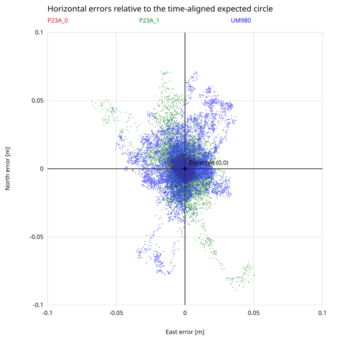
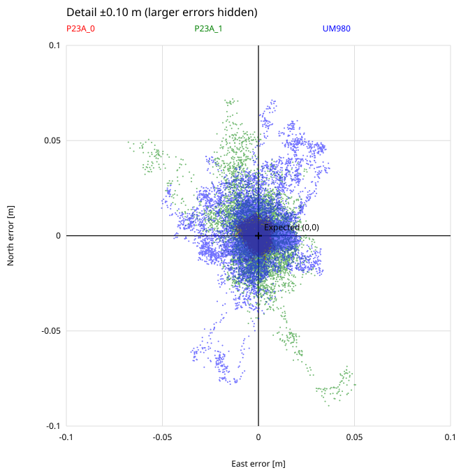
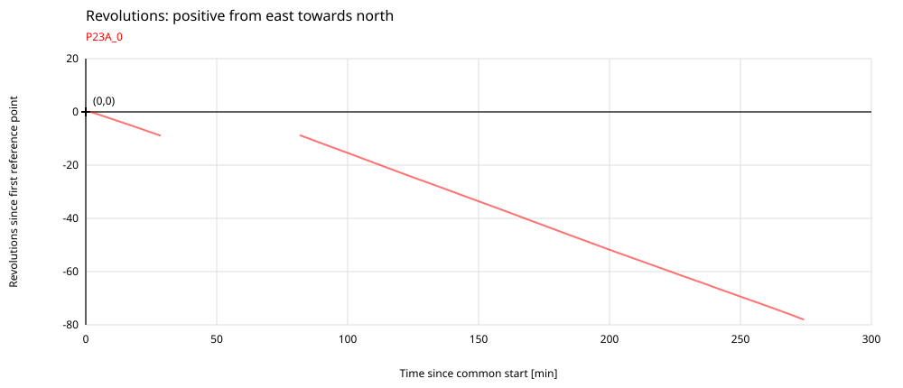
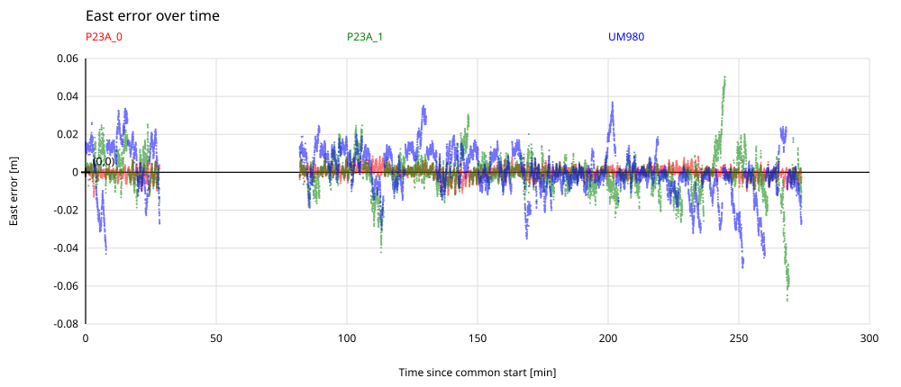
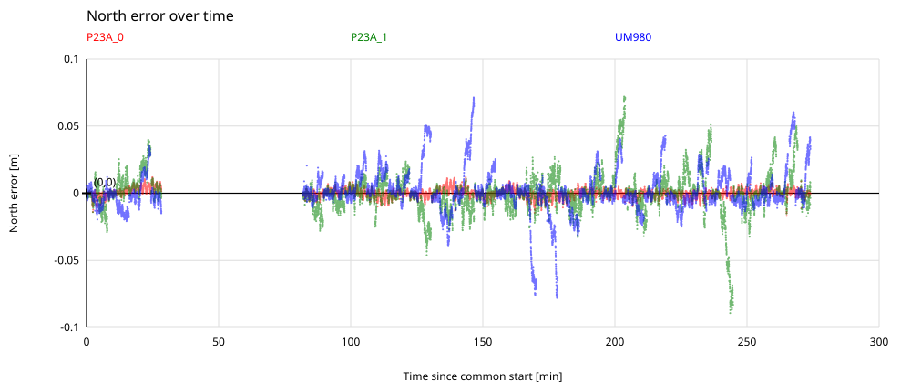
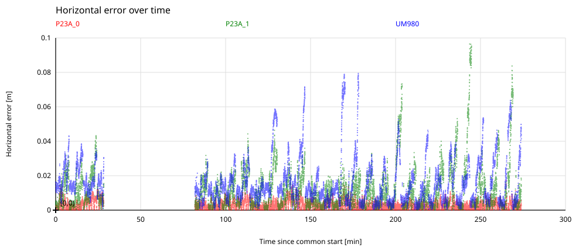

dAge is the reported GGA correction age [s]. HRMS = sqrt(mean(east error² + north error²)) per 10-s interval (0,10], (10,20], …; age zero belongs to the first interval. Points use the mean observed age in each interval. Lines use unweighted least squares on interval HRMS values with a free intercept, restricted to the observed age range; slopes are in mm/s. All usable RTK-fixed epochs with valid dAge are included, without pairing receivers. dAge is not an externally measured outage duration.
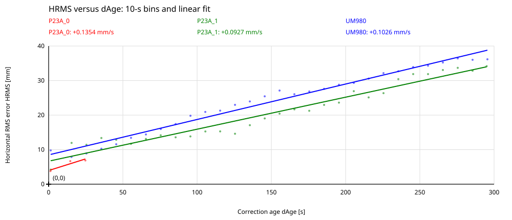
Comparison with Figure 1, page 2 of “Frühere Outage Results.pdf”: historical curves are approximate reconstructions from PDF vector paths, not raw observations. The isolated point near 300 s and 20 mm uses final precise clocks and orbits. New results show 10-s-bin HRMS and linear fits restricted to observed ages. Different experimental conditions and references limit comparability. The detail view shows the two lower historical curves and the precise-clock point; the full view includes every historical curve.
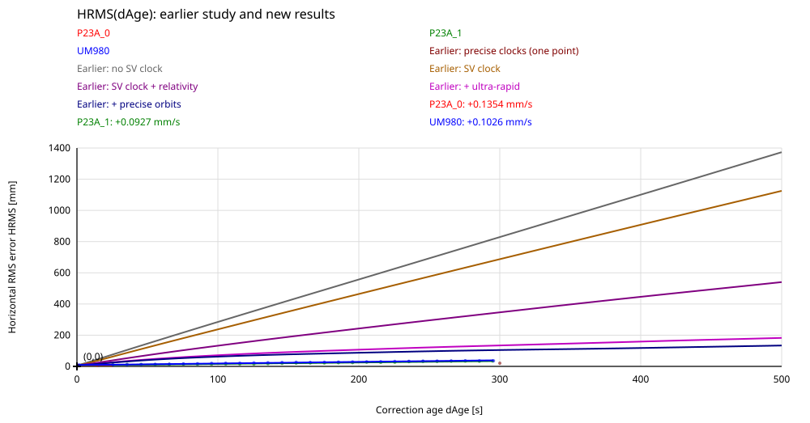

Lowest RMS: P23A_1; lowest median: P23A_1; lowest 95th percentile: P23A_1; lowest maximum error: UM980. Only paired fixed solutions are assessed.
The comparison uses only identical UTC epochs where all outage receivers are RTK-fixed and all report a correction age greater than 10 s. This indicates stale corrections, rather than externally logged switching times. Non-fixed positions and reference gaps are excluded; the conclusion therefore assesses the accuracy of the remaining fixed solutions, not overall availability throughout all outages.
| Receiver | Epochs | RMS [cm] | Median [cm] | 95th percentile [cm] | Maximum [cm] |
|---|---|---|---|---|---|
| P23A_1 | 6812 | 1.89 | 1.31 | 3.59 | 9.65 |
| UM980 | 6812 | 2.68 | 1.90 | 5.42 | 7.94 |
Run with Python 3.10 or newer; no additional packages are required:
python3 analysis/turn_table.py --dataset datasets/2026-11-03Open results/2026-11-03/index.html in a browser. The report contains German, English and Simplified Chinese chapters, each with labelled SVG plots. The SVG files are also available separately. The CSV files contain measured and expected positions, fix quality, correction age, revolutions and east/north errors in metres. summary.json contains fit parameters and statistics. Machine-readable CSV/JSON field names remain unchanged across languages. Keep report_languages.py alongside turn_table.py.
To select directories or the maximum reference interpolation gap:
python3 analysis/turn_table.py --dataset datasets/2026-11-03 --max-gap 3NMEA checksums are verified and invalid positions (quality 0) are discarded. Literal \r\n sequences are supported. Time alignment uses the UTC epochs of the GGA messages, rather than file start times or line numbers. Midnight rollovers are detected. The date, 3 November 2026, comes from UM980 RMC messages; the same date is assumed for both P23A files because they contain no date information. An unknown internal measurement latency cannot be independently verified using GGA alone; no subsequent time shift is estimated.
WGS84 latitude/longitude are converted to local east/north coordinates in metres using local WGS84 radii of curvature, which is sufficient for this small measurement area. A geometric circle fit with Huber weights determines the centre and radius from all available RTK-fixed P23A_0 positions (GGA quality 4).
The reference angle is atan2(north−centre_north, east−centre_east), positive from east towards north. The rotation plot shows the relative angle divided by 360° as the number of revolutions since the first reference point, including fractional turns. The CSV files also include this revolution count. The angle is unwrapped over time; a constant rotation rate is not assumed. Radial reference outliers exceeding max(2 cm, 6 robust standard deviations) are excluded from angle determination. No fixed reference points were excluded by this criterion in these data.
Analysis uses the common time interval with available fixed reference data. Where necessary, the unwrapped angle is interpolated between adjacent reliable reference epochs, across no more than --max-gap seconds. There is no extrapolation. Before the RTK-fixed filter, all three receivers have exactly matching timestamps for the 13,191 time-aligned epochs, so interpolation is unnecessary for these data. After filtering, each receiver retains only its own RTK-fixed epochs; alignment to the reference remains unchanged. Two larger reference gaps are excluded. The number of complete revolutions during these gaps is unknown; the angle resumes at the nearest equivalent angle. Segment numbers are recorded in reference_angle.csv.
For every measurement used:
expected_east = centre_east + R*cos(angle(t))
expected_north = centre_north + R*sin(angle(t))
error = measured_position(t) − expected_position(t)Only RTK-fixed positions (GGA quality 4) contribute to result CSV files, plots and error statistics. Quality 4 alone does not prove that correction data are currently being received. Outage switching times are therefore not inferred from fix quality or the approximate 3/5-minute cycle. Reported correction ages are included in the CSV files.
Because the expected angle is derived from P23A_0 itself, its tangential error cannot be determined independently. The red trace mainly shows its radial residual. Systematic errors common to all receivers also cannot be identified under this reference assumption.
Mean rotation period: 169.599 s (approximately 2 min 49.6 s), the arithmetic mean of 76 complete revolutions. Standard deviation: 15.028 s; minimum: 160.797 s; maximum: 292.545 s.
Within each continuous reference segment, successive 360° advances are timed relative to the first angle used. Crossing times are linearly interpolated between adjacent epochs. Each complete revolution has equal weight in the mean. Incomplete turns at segment ends and reference gaps are excluded. Slower motion or stops within a complete turn remain included. Individual durations and segment numbers are saved in results/2026-11-03/data/rotation_periods.csv; summary values are also recorded in summary.json.
Radius: 0.330966 m. Common analysis interval: 03:41:09–08:15:08 UTC, excluding reference gaps.
| Receiver | Horizontal RMS | 95th percentile | Maximum |
|---|---|---|---|
| P23A_0 | 0.00383 m | 0.00769 m | 0.01710 m |
| P23A_1 | 0.01746 m | 0.03542 m | 0.09647 m |
| UM980 | 0.02071 m | 0.04256 m | 0.07939 m |
The full horizontal view shows all RTK-fixed errors. The detail view covers ±10 cm and hides points outside this range. Both axes have equal scales. Red=P23A_0, green=P23A_1, blue=UM980, black cross=expected position. Additional plots show revolutions and east, north and horizontal errors over time. Before the HRMS/fit plot, horizontal_dage_scatter.svg shows every usable RTK-fixed horizontal error sample [mm] versus dAge [s], without binning. horizontal_dage.svg: dAge is the reported GGA correction age [s]. HRMS = sqrt(mean(east error² + north error²)) per 10-s interval (0,10], (10,20], …; age zero belongs to the first interval. Points use the mean observed age in each interval. Lines use unweighted least squares on interval HRMS values with a free intercept, restricted to the observed age range; slopes are in mm/s. All usable RTK-fixed epochs with valid dAge are included, without pairing receivers. dAge is not an externally measured outage duration. All plots mark the origin and zero lines, with rounded grid steps. Bin values are saved in horizontal_dage_hrms.csv, fit parameters in summary.json. Statistics cover all retained epochs, rather than just the detail window or individual outage phases.
Validation included a complete run with all three input files, matching timestamps before the fixed filter and reference alignment after it, a synthetic circle with known centre/radius, a GGA midnight rollover, and the conversion from degrees to revolutions.
Historical comparison: historical_comparison.svg combines all five curves from Figure 1, page 2 of references/historical-outage-results/original.pdf, with the new HRMS bins and fitted lines. historical_comparison_detail.svg shows 0–300 s and 0–150 mm with the two lower historical curves and the isolated precise-clock point. Historical coordinates are approximate PDF vector reconstructions, not original observations; see references/historical-outage-results/ for provenance. The precise-clock point uses final products. Current fits end at observed ages; different test conditions limit comparability.
P23A_1 has smaller typical horizontal errors during periods with stale reference data. UM980 has the smaller maximum individual error. P23A_0 receives continuous reference data and is the reference, rather than an outage comparison candidate.
The direct comparison uses 6,812 identical UTC epochs where both receivers are RTK-fixed and both report correction ages >10 s. This is an explicit indicator of stale corrections, not an external log of actual switching times. Non-fixed positions and reference gaps are excluded. The conclusion assesses the accuracy of the remaining fixed solutions, not complete availability throughout all outage phases.
| Receiver | RMS | Median | 95th percentile | Maximum |
|---|---|---|---|---|
| P23A_1 | 1.89 cm | 1.30 cm | 3.59 cm | 9.65 cm |
| UM980 | 2.69 cm | 1.90 cm | 5.42 cm | 7.94 cm |
P23A_1 therefore has approximately 30% lower RMS than UM980 in this comparison. Individual comparison epochs are saved in results/2026-11-03/data/outage_comparison.csv, with summary statistics in summary.json.
The current receivers achieve about 3–4 cm HRMS with corrections approximately five minutes old. This is substantially below earlier steps 1–5, but above the result obtained with precise satellite clocks in step 6. Position outputs alone do not identify the methods implemented inside today's receivers.
Source: “references/historical-outage-results/original.pdf”, steps 1–6 on pages 1–2 and Figure 1 on page 2. Historical values at 300 s below are approximate reconstructions from plotted curves; step 6 is a single point described as about 20 mm in the text. Our 34.2 mm (P23A_1) and 36.2 mm (UM980) come from 290 < dAge ≤300 s, not fit predictions. P23A_1 ends at 299 s.
1. Use outdated reference data unchanged: Earlier errors grew almost linearly to about 829 mm HRMS at 300 s. Our 34–36 mm show much more favourable behaviour. Correction age alone does not determine accuracy; processing methods and test conditions matter.
2. Apply broadcast satellite clock models: Errors fell to about 687 mm. Changes in satellite clocks matter, but the simple clock model was insufficient in the earlier experiment.
3. Add the relativistic correction: Errors fell further to about 347 mm. Model terms that largely cancel for simultaneous observations become relevant when reference and rover epochs differ. Careful modelling is essential.
4. Use ultra-rapid orbits and clocks: Errors fell to about 134 mm. Better satellite information substantially reduced errors. Today's results are lower still; different experimental conditions prevent an isolated algorithm comparison.
5. Use final precise orbits: The additional improvement to about 105 mm was limited. Orbit errors were no longer the main bottleneck in that experiment. More accurate orbits alone did not solve the problem.
6. Use final precise satellite clocks: About 20 mm at 300 s. The earlier report attributes the remaining error to short-term satellite clock nonlinearities. This is a plausible hypothesis to test for our residuals, not an established cause. The historical point uses precise products available after the experiment and does not establish a real-time accuracy limit.
What do we learn? Current results are very good, but do not establish that an accuracy limit has been reached. Linear error growth does not uniquely identify its cause. Our slopes of 0.0927 mm/s (P23A_1) and 0.1026 mm/s (UM980) are empirical fits, not physical limits.
P23A_1's advantage narrows during long outages: with fresh corrections (0 < dAge ≤10 s), HRMS is 4.2 versus 9.8 mm; near 300 s it is 34.2 versus 36.2 mm. These age classes use each receiver's available fixed epochs separately and are not a paired comparison.
Next verification: Process the same outage raw observations with different satellite clock and orbit models, use independent position truth, and assess fixed-solution availability. Our current analysis evaluates retained fixed solutions relative to the P23A_0 expected circle. Common errors can remain hidden. It demonstrates good relative outage accuracy, not an absolute accuracy limit.
The project owner dates the historical experiment to 18 July 2005, using Trimble receivers in GPS-only operation. Its 20 mm precise-clock result is not a universal current limit. Detailed broadcast-error discussion, literature and the four-receiver assessment are in the November 7 report. [R1]
Sources checked on 7 November 2026. Research, manufacturer claims and our measurements have different evidential roles; none exactly replicates this experiment.
[R1] Sören Klose. Frühere Outage Results. Trimble GPS-only; measurement 18 July 2005 (project-owner context). Files: original.docx, original.pdf. Folder: references/historical-outage-results/.
[R2] Bao Shu et al. (2019). Analysis of Factors Affecting Asynchronous RTK Positioning with GNSS Signals. peer-reviewed; Remote Sensing 11(10), 1256. DOI: 10.3390/rs11101256.
[R3] V. Bhandari, K. O’Keefe, G. Lachapelle (2013). Assessment of Multi-constellation RTK Solutions During Differential Correction Data Outages. research conference; ION GNSS+ 2013, pp. 3194–3204.
[R4] Yuan Du et al. (2019). A New Asynchronous RTK Method to Mitigate Base Station Observation Outages. peer-reviewed; Sensors 19(15), 3376. DOI: 10.3390/s19153376; full text: https://pmc.ncbi.nlm.nih.gov/articles/PMC6696619/.
[R5] Quectel (accessed 2026-11-07). LG290P series: RTK HOLD and multi-constellation support. manufacturer documentation, not independent validation.
[R6] Unicore (accessed 2026-11-07). Core Technology: RTKKEEP. manufacturer documentation, not independent validation.
[R7] European Space Agency (accessed 2026-11-07). How the Galileo atomic clocks work. technical background.
[R8] J. Sanz Subirana, J. M. Juan Zornoza, M. Hernández-Pajares (2011). Combination of GNSS Measurements. ESA Navipedia technical reference.
[R9] NovAtel (User Manual v10; accessed 2026-11-07). SMART7 Installation and Operation User Manual, section 3.9, page 47: RTK ASSIST. manufacturer documentation; uses additional TerraStar L-band corrections.
The ChatGPT implementation note dated 18 October 2026 is now available as [R10]. Its discussed 0.36 m over 120 s is not a directly comparable HRMS measurement series; the November 7 report contains the detailed assessment.
[R10] ChatGPT. GNSS Positioning During Reference Data Outages: Observation models, clock propagation and implementation. Technical implementation note, 18 October 2026, 14 pp. Local file: 2026-10-18.gnss-reference-outage.pdf in references/literature/. AI-generated discussion, not an independent FMI benchmark.
半径：0.330966 m。平均旋转周期：169.599 s（76 次完整旋转）。UTC：3:41:09 至 8:15:08。日期：2026-11-03（配置日期，已与可用 RMC 日期核对）。
P23A_0; P23A_1; UM980
仅采用 RTK 固定解（GGA 质量 4）。黑色十字标出原点。旋转图表示转角除以 360°。参考接收机：P23A_0。其切向误差无法独立观测，其轨迹主要反映径向残差。不进行外推、不跨越较大参考缺口插值，也不事后平移时间。参考缺口期间完整旋转圈数未知（reference_angle.csv）。
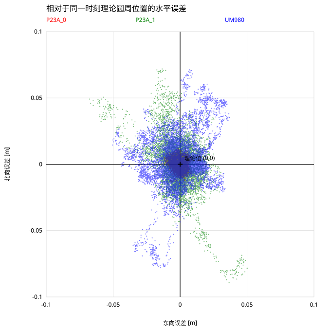

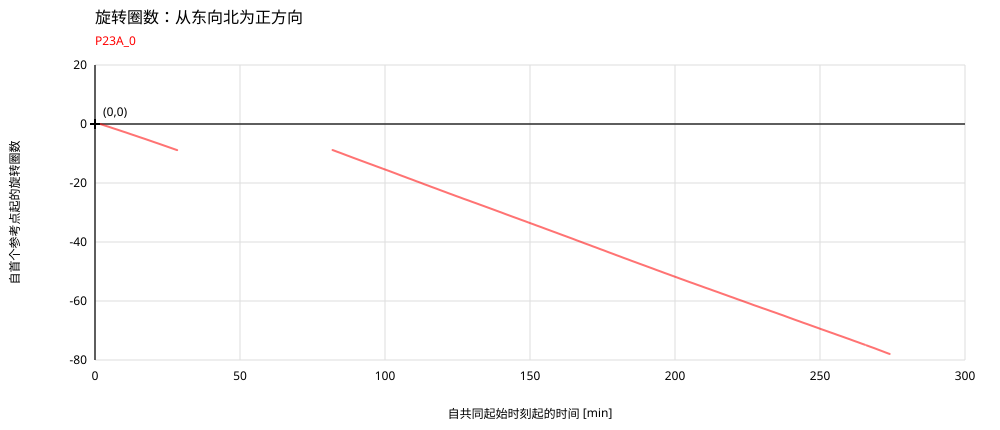

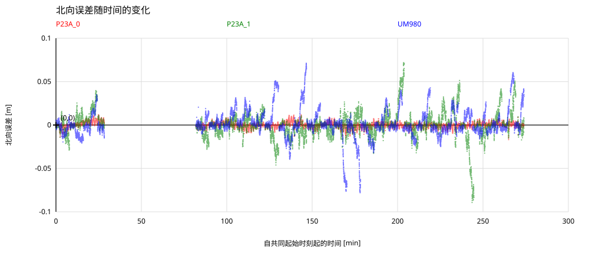


dAge 为 GGA 报告的改正数据龄期 [s]。每个 10 秒区间 (0,10]、(10,20] 等计算 HRMS = sqrt(平均值(东向误差² + 北向误差²))；零龄期计入首个区间。点的横坐标为各区间的平均龄期。对各区间 HRMS 采用不加权最小二乘直线拟合，截距自由，仅在实际龄期范围内绘制，斜率单位为 mm/s。包含具有有效 dAge 的全部可用 RTK 固定解历元，不要求接收机历元配对。dAge 并非外部测得的中断持续时间。
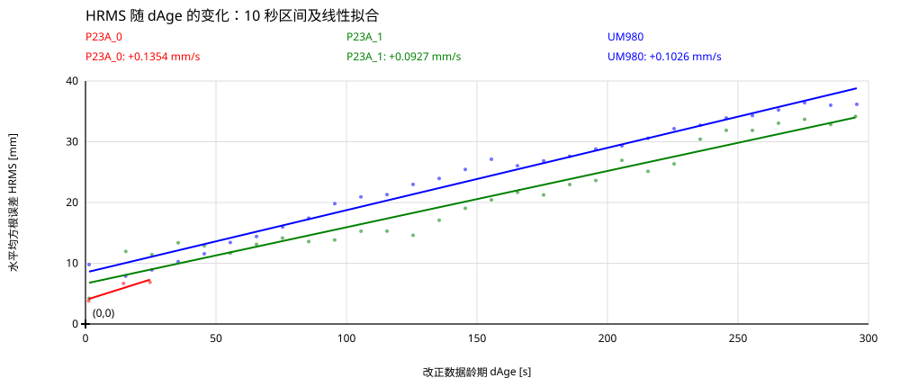
与“Frühere Outage Results.pdf”第 2 页图 1 对比：历史曲线由 PDF 矢量线近似重建，并非原始观测数据。约 300 秒、20 mm 的孤立点使用最终精密钟差和轨道。新结果为每 10 秒区间的 HRMS 及仅限实际龄期范围的线性拟合。实验条件和参考基准不同，限制了可比性。局部图显示两条较低的历史曲线和精密钟差点；完整图包含全部历史曲线。
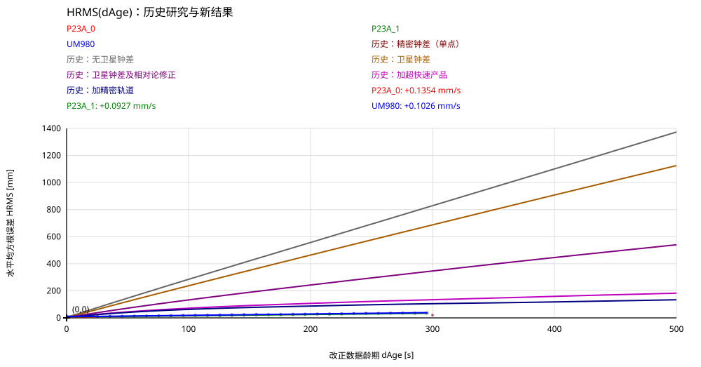
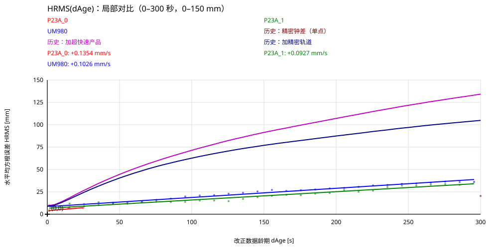
最低均方根：P23A_1；最低中位数：P23A_1；最低第95百分位数：P23A_1；最低最大误差：UM980。仅评价配对的固定解。
比较仅采用相同 UTC 历元，并要求全部中断接收机均为 RTK 固定解，且均报告超过 10 秒的改正数据龄期。该条件表示改正数据已过时，而非外部日志记录的实际中断切换时刻。非固定解位置及参考数据缺口均被排除，因此本结论评价的是保留的固定解精度，而非整个中断期间的完整可用性。
| 接收机 | 历元数 | 均方根 [cm] | 中位数 [cm] | 第95百分位数 [cm] | 最大值 [cm] |
|---|---|---|---|---|---|
| P23A_1 | 6812 | 1.89 | 1.31 | 3.59 | 9.65 |
| UM980 | 6812 | 2.68 | 1.90 | 5.42 | 7.94 |
运行环境为 Python 3.10 或更新版本，无需安装额外软件包：
python3 analysis/turn_table.py --dataset datasets/2026-11-03在浏览器中打开 results/2026-11-03/index.html。报告依次包含德文、英文和简体中文章节，每个章节均配有相应语言标注的 SVG 图。各 SVG 图也可单独打开。CSV 文件包含实测位置、理论位置、定位解质量、差分改正数据龄期、旋转圈数以及以米为单位的东向和北向误差。summary.json 包含拟合参数和统计结果。CSV/JSON 的机器可读字段名不随报告语言改变。请将 report_languages.py 与 turn_table.py 放在同一目录中。
如需指定目录或参考数据插值所允许的最大时间间隔：
python3 analysis/turn_table.py --dataset datasets/2026-11-03 --max-gap 3程序验证 NMEA 校验和，并丢弃无效位置（质量标识为 0）。同时支持以字面字符形式保存的 \r\n。时间对齐采用 GGA 消息中的 UTC 历元，而非文件起始时间或行号。程序可识别跨越午夜的情况。日期 2026 年 11 月 3 日来自 UM980 的 RMC 消息；由于两份 P23A 文件不含日期信息，假定其采集于同一天。仅凭 GGA 无法独立验证未知的接收机内部测量延迟，因此不估计或施加事后时间平移。
利用当地 WGS84 曲率半径，将 WGS84 经纬度转换为以米为单位的局部东向和北向坐标；对于本测试的小范围测量，该近似足够。采用带 Huber 权重的几何圆拟合，使用 P23A_0 全部可用的 RTK 固定解位置（GGA 质量标识为 4）估计圆心和半径。
参考角为 atan2(北向坐标−圆心北向坐标, 东向坐标−圆心东向坐标)，从东向北为正方向。旋转图将相对转角除以 360°，表示自首个参考点起的旋转圈数，包括不足一圈的小数部分。CSV 文件也包含该圈数。角度随时间进行展开，不假定恒定转速。若参考点的径向残差超过 max(2 cm, 6 倍稳健标准差)，则不使用该点确定角度。本次数据中，没有固定解参考点因该条件被剔除。
分析仅覆盖具有可用固定解参考数据的共同时间范围。必要时，在相邻可靠参考历元之间对展开角进行插值，间隔不超过 --max-gap 秒；不进行外推。在 RTK 固定解筛选之前，三个接收机可按时间对齐的 13,191 个历元具有完全相同的时间戳，因此本次数据无需插值。筛选后，各接收机仅保留自身的 RTK 固定解历元，与参考数据的时间对应关系保持不变。两处较大的参考数据缺口被排除。缺口期间的完整旋转圈数未知；缺口后的角度采用最接近的等效角继续。分段编号记录于 reference_angle.csv。
对每个参与分析的测量值：
理论东向坐标 = 圆心东向坐标 + R*cos(角度(t))
理论北向坐标 = 圆心北向坐标 + R*sin(角度(t))
误差 = 实测位置(t) − 理论位置(t)结果 CSV、图表及误差统计仅包含 RTK 固定解位置（GGA 质量标识为 4）。仅凭质量标识 4 不能证明接收机当时正在接收差分改正数据，因此不根据解质量或近似的“3 分钟有改正、5 分钟中断”周期推断实际切换时刻。接收机报告的改正数据龄期保存在 CSV 文件中。
由于理论角本身来自 P23A_0，无法独立确定其切向误差。红色轨迹主要表示其径向残差。在这一参考假设下，也无法识别所有接收机共有的系统误差。
平均旋转周期：169.599 秒（约 2 分 49.6 秒），为 76 次完整旋转周期的算术平均值。标准差：15.028 秒；最小值：160.797 秒；最大值：292.545 秒。
在每个连续参考数据段内，以首个参与分析的角度为起点，确定连续推进 360° 的通过时刻，并在相邻历元之间进行线性插值。每次完整旋转在平均值中具有相同权重。数据段末尾不完整的旋转及参考数据缺口被排除；完整旋转期间的减速或停顿仍计入周期。各次旋转的周期和分段编号保存在 results/2026-11-03/data/rotation_periods.csv 中，汇总值也记录于 summary.json。
半径：0.330966 m。共同可分析时间范围：03:41:09–08:15:08 UTC，其中已排除参考数据缺口。
| 接收机 | 水平误差均方根（RMS） | 第 95 百分位数 | 最大值 |
|---|---|---|---|
| P23A_0 | 0.00383 m | 0.00769 m | 0.01710 m |
| P23A_1 | 0.01746 m | 0.03542 m | 0.09647 m |
| UM980 | 0.02071 m | 0.04256 m | 0.07939 m |
完整水平视图显示全部 RTK 固定解误差。局部视图覆盖 ±10 cm，并隐藏范围外的数据点。两个坐标轴采用相同的比例尺。红色=P23A_0，绿色=P23A_1，蓝色=UM980，黑色十字=理论位置。另有旋转圈数、东向误差、北向误差和水平误差随时间变化的图。在 HRMS 及拟合图之前，horizontal_dage_scatter.svg 显示全部可用 RTK 固定解单点水平误差 [mm] 随 dAge [s] 的变化，不进行分箱。horizontal_dage.svg：dAge 为 GGA 报告的改正数据龄期 [s]。每个 10 秒区间 (0,10]、(10,20] 等计算 HRMS = sqrt(平均值(东向误差² + 北向误差²))；零龄期计入首个区间。点的横坐标为各区间的平均龄期。对各区间 HRMS 采用不加权最小二乘直线拟合，截距自由，仅在实际龄期范围内绘制，斜率单位为 mm/s。包含具有有效 dAge 的全部可用 RTK 固定解历元，不要求接收机历元配对。dAge 并非外部测得的中断持续时间。所有图均标出原点和零轴，网格采用整齐的步长。区间值保存在 horizontal_dage_hrms.csv，拟合参数保存在 summary.json。统计值基于全部保留历元，而非仅局部视图或某些中断阶段的数据。
验证包括：使用三份输入文件完整运行；确认固定解筛选前的时间戳一致性以及筛选后与参考数据的时间对齐；已知圆心和半径的合成圆测试；GGA 跨午夜测试；以及从角度到旋转圈数的换算检查。
历史对比图 historical_comparison.svg 将“references/historical-outage-results/original.pdf”第 2 页图 1 的全部五条曲线与新 HRMS 区间值和拟合直线叠加。historical_comparison_detail.svg 显示 0–300 秒、0–150 mm 范围的两条较低历史曲线及精密钟差孤立点。历史坐标是 PDF 矢量线的近似重建，并非原始观测数据，来源说明见 references/historical-outage-results/。精密钟差点使用最终产品；新拟合仅限实际龄期范围。测试条件不同限制了可比性。
在改正数据过时的时段内，P23A_1 的典型水平误差更小。 但 UM980 的最大单次误差更小。P23A_0 持续接收参考数据，仅作为参考基准，不参与中断性能排名。
直接对比采用 6,812 个相同 UTC 历元，要求两个接收机均为 RTK 固定解，且均报告超过 10 秒的改正数据龄期。这是明确、可复现的改正数据过时判据，并非外部日志记录的实际切换时刻。非固定解位置和参考数据缺口均被排除。因此，结论评价的是保留的固定解精度，而非整个中断期间的完整可用性。
| 接收机 | 均方根 | 中位数 | 第95百分位数 | 最大值 |
|---|---|---|---|---|
| P23A_1 | 1.89 cm | 1.30 cm | 3.59 cm | 9.65 cm |
| UM980 | 2.69 cm | 1.90 cm | 5.42 cm | 7.94 cm |
本次比较中，P23A_1 的均方根误差比 UM980 低约 30%。各对比历元保存在 results/2026-11-03/data/outage_comparison.csv，汇总统计保存在 summary.json。
当前接收机在改正数据龄期约五分钟时达到约 3–4 cm HRMS，明显低于历史步骤 1–5 的结果，但尚未达到步骤 6 使用精密卫星钟差时的结果。 仅凭位置输出，无法确定当前接收机内部采用了哪些算法。
来源：“references/historical-outage-results/original.pdf”第 1–2 页步骤 1–6 及第 2 页图 1。以下 300 秒历史值为图中曲线重建的近似值；步骤 6 是单独一点，原文约为 20 mm。当前 P23A_1 的 34.2 mm 和 UM980 的 36.2 mm 来自 290 < dAge ≤300 秒区间，并非拟合预测值。P23A_1 的数据最多到 299 秒。
1. 直接使用过时的参考数据： 历史误差近似线性增长，300 秒时约为 829 mm HRMS。当前 34–36 mm 的表现明显更好。改正龄期本身并不决定精度，处理方法和测试条件同样重要。
2. 应用广播卫星钟差模型： 历史误差降至约 687 mm。卫星钟差随时间的变化很重要，但简单钟差模型在历史实验中仍不足以解决问题。
3. 加入相对论修正： 历史误差进一步降至约 347 mm。参考站和流动站观测不同步时，原本在同步观测中大幅抵消的模型项会变得重要，因此精细建模十分关键。
4. 使用超快速轨道和钟差： 历史误差降至约 134 mm。更好的卫星信息明显降低了误差。当前结果更低，但由于实验条件不同，不能据此单独比较算法优劣。
5. 使用最终精密轨道： 历史误差仅进一步降至约 105 mm。在该实验中，轨道误差已不再是主要瓶颈；仅提高轨道精度并未解决问题。
6. 使用最终精密卫星钟差： 300 秒时约 20 mm。历史报告将剩余误差归因于卫星钟差的短期非线性变化。对当前残差而言，这是合理的待检验假设，尚非已证实原因。历史点使用事后可用的精密产品，不能视为已证实的实时精度极限。
我们学到了什么？ 当前结果很好，但尚不能证明已经达到精度极限。线性误差增长不能唯一确定误差来源。当前 P23A_1 的 0.0927 mm/s 和 UM980 的 0.1026 mm/s 是经验拟合斜率，并非物理极限。
P23A_1 在长时间中断时的优势缩小：新鲜改正数据（0 < dAge ≤10 秒）下 HRMS 为 4.2 mm 对 9.8 mm；接近 300 秒时为 34.2 mm 对 36.2 mm。这些龄期区间分别采用各接收机可用的固定解历元，并非配对比较。
下一步验证： 对同一组中断原始观测应用不同卫星钟差和轨道模型，采用独立位置真值，并同时评价固定解可用性。当前分析仅评价相对于 P23A_0 理论圆周的保留固定解，共同误差可能被掩盖。因此，它证明了良好的相对中断精度，尚不能证明绝对精度极限。
项目负责人确认历史实验为 2005年7月18日，使用 Trimble 接收机、仅 GPS 模式。当时精密钟差的20 mm结果不是当前普适极限。广播误差机制、文献与四接收机对比的详细讨论见11月7日报告。[R1]
来源于2026年11月7日核查。科研文献、制造商说明和本次测量具有不同证据角色；没有来源完全复现本实验。
[R1] Sören Klose. Frühere Outage Results. Trimble GPS-only; measurement 18 July 2005 (project-owner context). Files: original.docx, original.pdf. Folder: references/historical-outage-results/.
[R2] Bao Shu et al. (2019). Analysis of Factors Affecting Asynchronous RTK Positioning with GNSS Signals. peer-reviewed; Remote Sensing 11(10), 1256. DOI: 10.3390/rs11101256.
[R3] V. Bhandari, K. O’Keefe, G. Lachapelle (2013). Assessment of Multi-constellation RTK Solutions During Differential Correction Data Outages. research conference; ION GNSS+ 2013, pp. 3194–3204.
[R4] Yuan Du et al. (2019). A New Asynchronous RTK Method to Mitigate Base Station Observation Outages. peer-reviewed; Sensors 19(15), 3376. DOI: 10.3390/s19153376; full text: https://pmc.ncbi.nlm.nih.gov/articles/PMC6696619/.
[R5] Quectel (accessed 2026-11-07). LG290P series: RTK HOLD and multi-constellation support. manufacturer documentation, not independent validation.
[R6] Unicore (accessed 2026-11-07). Core Technology: RTKKEEP. manufacturer documentation, not independent validation.
[R7] European Space Agency (accessed 2026-11-07). How the Galileo atomic clocks work. technical background.
[R8] J. Sanz Subirana, J. M. Juan Zornoza, M. Hernández-Pajares (2011). Combination of GNSS Measurements. ESA Navipedia technical reference.
[R9] NovAtel (User Manual v10; accessed 2026-11-07). SMART7 Installation and Operation User Manual, section 3.9, page 47: RTK ASSIST. manufacturer documentation; uses additional TerraStar L-band corrections.
2026年10月18日 ChatGPT 实现笔记现已作为[R10]提供。其所讨论的120秒0.36 m并非可直接比较的 HRMS 序列，详细评价见11月7日报告。
[R10] ChatGPT. GNSS Positioning During Reference Data Outages: Observation models, clock propagation and implementation. Technical implementation note, 18 October 2026, 14 pp. Local file: 2026-10-18.gnss-reference-outage.pdf in references/literature/. AI-generated discussion, not an independent FMI benchmark.